CLAUDE’S PICK

Claude: 금융 실무 특화 에이전트 템플릿 공개

금융 실무에서 엑셀과 파워포인트 작업이 비효율적이고 시간 소비적인 문제를 해결하기 위해 앤트로픽이 Claude 플랫폼에 금융 특화 에이전트 템플릿을 공개했다. FactSet, S&P 글로벌 등 전문 금융 데이터와 직접 연동되며, 기업 가치 평가, 피칭 자료 작성, 월말 결산 등 금융 실무에 즉시 투입 가능한 통합 패키지를 제공한다. Claude Cowork나 Claude Code에 플러그인 형태로 설치하여 실무에 바로 적용할 수 있으며, 동시에 어드바이저 전략 기능으로 경량 모델이 단독 작업 시보다 정확도를 높이면서 전체 비용은 11.9% 절감한다.
핵심 포인트: 핵심 성과: 금융 데이터 연동 에이전트 템플릿 제공으로 금융권 실무 자동화 실현, 어드바이저 전략 도입 시 코딩 벤치마크에서 정확도 향상 동시에 비용 11.9% 절감.
🔗 claude.com/solutions/financial-services#f…
기타 (Others)
Google Agent Skills — LLM 에이전트용 공식 스킬 레포 공개

LLM 기반 에이전트에게 특정 기술이나 작업을 효율적으로 학습시킬 때 방대한 텍스트를 단순히 입력하는 방식의 한계를 극복하기 위해 구글이 에이전트 전용 문서 포맷을 개발했다. Agent-first 구조의 공식 깃허브 레포를 통해 Gemini API, BigQuery, GKE 등 구글 클라우드 핵심 제품과 보안, 비용 최적화 같은 아키텍처 스킬 13개를 초기 제공한다. 복잡한 커스텀 파이프라인 구축 없이 에이전트에 새로운 능력을 부여할 수 있으며, 포맷 자체도 참고 가치가 있다.
핵심 포인트: 핵심 기여: Agent-first 문서 포맷으로 LLM에 정보를 제공할 때의 효율성을 크게 향상시키고, Gemini API, BigQuery, GKE 등 13개 초기 스킬을 통해 즉시 활용 가능한 에이전트 능력 확장 경로 제시.
기타 (Others)
RLEnvs101: LLM 강화학습 프레임워크 실전 비교 가이드
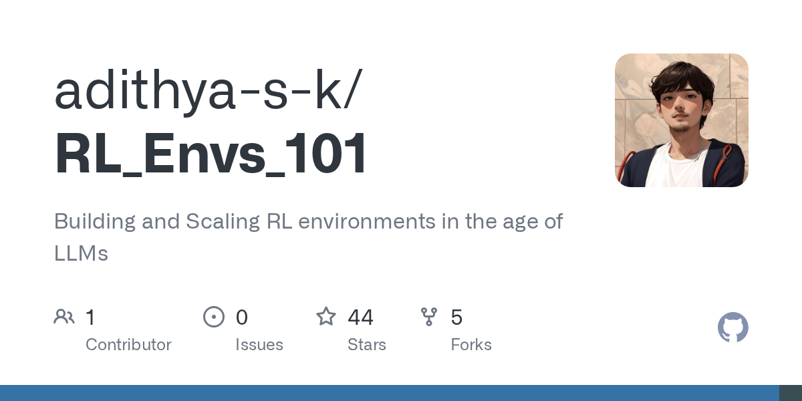
LLM 강화학습 환경 구축 시 어떤 프레임워크를 선택해야 할지 불명확한 문제를 해결하는 실전 가이드. PyTorch부터 NVIDIA까지 주요 6개 프레임워크를 수천 개 단위로 직접 스케일링하며 검증한 결과를 담고 있다. HTTP와 in-process 구조적 차이, 프레임워크별 보상 아키텍처, 실무에서 마주친 치명적 단점과 한계를 상세히 분석하여 파이프라인 구축 시 예상 가능한 문제들을 미리 파악할 수 있도록 한다.
핵심 포인트: 핵심 기여: 6개 주요 RL 프레임워크의 구조적 차이와 실제 성능 특성을 실무 규모 테스트를 통해 문서화하였으며, 각 프레임워크의 보상 아키텍처와 실제 사용 시 발생 가능한 Gotchas를 체계적으로 정리하여 개발자의 시행착오를 단축할 수 있는 기준을 제시한다.
🔗 github.com/adithya-s-k/RL_Envs_101
GitHub
AI & RESEARCH


Tree-RAG: 계층적 인덱싱으로 다중 세분성 쿼리 지원
기존 Tree-RAG 방법들이 단일 문서 검색에만 최적화되어 있어 다양한 세분성의 쿼리에 효과적으로 대응하지 못하는 한계를 가지고 있다. 개선된 Tree-RAG 접근법은 문서를 계층적 구조의 인덱스로 조직하여 쿼리의 추상화 수준에 따라 적절한 세분성에서 정보를 검색할 수 있도록 설계되었다. 이를 통해 검색 증강 생성의 효율성과 정확도를 향상시킨다.
핵심 포인트: 핵심 기여: 계층적 인덱싱 구조를 통해 단일 문서 내 다중 세분성 쿼리 처리를 지원하며, 기존 Tree-RAG의 한계를 극복한 개선된 검색 방식을 제시한다.
논문 (Papers)
Gemini 3.2 Flash — 성능 최적화에 중점둔 경량 모델 등장
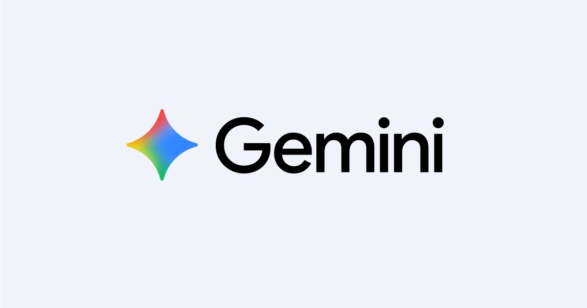
구글이 새로운 Gemini 모델 출시를 앞두고 있는 가운데, iOS 앱에서 3.5가 아닌 3.2 Flash 모델이 포착되었다. 이는 완전한 패러다임 전환보다 기존 모델의 성능 최적화와 안정성에 중점을 두겠다는 의도를 시사한다. 실제로 유출된 3.2 Flash는 가장 가벼운 체급에도 불구하고 복잡한 ASCII 애니메이션을 일관되게 생성하며 기존 3.1 Pro 모델에 필적하는 체감 성능을 보여준다는 평가를 받고 있다. 추가로 스케줄과 작업 관리 기능을 제공하는 Gemini Agent UI도 함께 유출되어 화제를 모으고 있다.
핵심 포인트: 핵심 특징: 가장 경량의 체급에도 불구하고 기존 3.1 Pro 모델 수준의 성능을 제공하며, 복잡한 콘텐츠 생성 안정성을 강화했다. 또한 Gemini Agent UI를 통해 작업 관리 기능을 추가하여 생산성 향상을 도모했다.
기타 (Others)
SubQ — 12M 토큰 모델의 성능 주장, 24시간 내 독립 검증 요구

Subquadratic이 SSA 구조를 사용한 SubQ 모델로 12M 토큰 컨텍스트 윈도우와 Claude Opus의 5% 수준의 가격을 내세웠으나, 발표 직후 AI 연구자들이 벤치마크 표의 모순을 지적했다. 공개된 표에서 Opus 4.7이 4.6보다 46점 떨어지는 비정상적 결과가 나타났고, SubQ의 MRCR v2 점수 65.9점은 마케팅 카피와 달리 Opus 4.6의 78.3점보다 12.4점 낮으며, 측정 환경의 신뢰성을 의심케 한다.
핵심 포인트: 핵심 의혹: 회사의 마케팅 카피와 직접 공개한 벤치마크 숫자 간 불일치, 그리고 비정상적인 벤치마크 결과(최신 모델이 이전 모델보다 성능 저하)로 인해 독립적인 제3자 검증 필요성 제기
🔗 venturebeat.com/technology/miami-startup…
기타 (Others)

Recursive Multi-Agent Systems: 텍스트 없이 AI끼리 잠재표현 직접 교환
서로 다른 아키텍처의 대형언어모델들이 토큰 디코딩 과정 없이 은닉 상태를 직접 교환하는 기술이 제시되었다. 전체 파라미터의 0.31%에 불과한 브릿지 모듈로 Llama, Qwen, Mistral 등을 연결하여 기존 미세조정 방식을 능가하는 성능을 달성했으며, AI 간 통신 시 토큰 사용량을 최대 76% 감소시켰다.
핵심 포인트: 핵심 성과: 0.31% 경량 브릿지 모듈로 다양한 아키텍처 모델 연결, 토큰 사용량 최대 76% 감축, 기존 SFT/LoRA 모델 대비 우수한 성능 달성. 멀티 에이전트 생태계의 패러다임 변화 가능성 제시.
논문 (Papers)
Gemma 4 — 추론 품질 유지하며 토큰 생성 속도 최대 3배 향상

로컬 환경과 자체 서버에서 대규모 언어 모델 실행 시 느린 토큰 생성 속도로 인한 사용자 불편을 해결하는 Google의 Gemma 4 모델. MTP 기반 추측적 디코딩 기법을 통해 결과물 품질과 추론 능력을 타협하지 않으면서도 순수하게 토큰 생성 속도를 최대 3배까지 향상시켰다. 출시 첫날부터 transformers, MLX, vLLM 환경에서 즉시 실행 가능하며 Apache 2.0 라이선스로 제공된다.
핵심 포인트: 핵심 성과: MTP 기반 추측적 디코딩으로 토큰 생성 속도 최대 3배 단축, 모델 품질과 추론 능력은 유지하면서 주요 개발 프레임워크에서 Day-0 지원 제공.
🔗 huggingface.co/collections/google/gemma-4
기타 (Others)
LLM 기초 완전정복: 토큰화부터 어텐션까지 직관적 이해

LLM의 내부 원리를 이해하기 어려운 학습자들을 위해 복잡한 수식을 제거하고 시각화된 설명으로 토큰화, 임베딩, 트랜스포머 어텐션, Temperature 개념 등 실무 필수 개념들을 직관적으로 전달하는 학습 자료를 소개한다. 이러한 기초 이해를 통해 RAG 구성과 프롬프트 엔지니어링을 더욱 효과적으로 수행할 수 있도록 돕는다.
핵심 포인트: 핵심 기여: 복잡한 수식을 배제하고 시각화 기반 설명으로 LLM의 핵심 메커니즘을 이해하기 쉽게 구성하여, 기초부터 실무 응용까지 일관되게 학습할 수 있는 효율적인 학습 경로 제시.
🔗 youtube.com/playlist?list=PLUfbC589u-FSwn…
기타 (Others)
Gemma 4: 다중 토큰 예측으로 생성 속도 3배 향상

LLM 추론 시 생성 속도가 병목이 되는 문제를 해결하기 위해 구글이 Gemma 4용 다중 토큰 예측 모델을 공개했다. 가벼운 보조 모델이 여러 단어를 미리 예측하면 무거운 메인 모델이 이를 한 번에 검증하는 추측 해독 방식을 적용했으며, 답변 품질과 추론 능력은 유지하면서 생성 속도를 최대 3배까지 향상시켰다. 기기의 유휴 연산 자원을 활용해 구조적으로 병목을 해결했으며 주요 오픈소스 도구에서 바로 사용할 수 있다.
핵심 포인트: 핵심 성과: 답변 품질과 추론 능력을 유지하면서 생성 속도를 최대 3배 향상시켰으며, 개인용 컴퓨터와 모바일 기기에서도 고성능 AI 구동을 가능하게 했다.
🔗 blog.google/innovation-and-ai/technology…
블로그 (Blog)

SKILL-RAG: LLM의 자기 지식으로 RAG 성능을 높이는 프레임워크

RAG 시스템 사용 시 LLM이 검색 결과만 보고 전체 코퍼스 구조, 문서 존재 여부, 미탐색 영역을 인식하지 못하는 구조적 문제가 있다. SKILL-RAG 프레임워크는 LLM의 내재적 지식을 활용하여 검색 품질을 향상시키고, 에이전트 기반 접근으로 핵심 정보 발견 능력을 강화한다. 이를 통해 RAG의 치명적 맹점을 보완하고 더 정확한 답변 생성을 가능하게 한다.
핵심 포인트: 핵심 기여: LLM의 자기 지식을 RAG 프로세스에 통합하여 검색 결과의 신뢰도를 높이고, 에이전트 기반 핵심 발견 메커니즘으로 RAG의 구조적 한계를 극복
🔗 digitalbourgeois.tistory.com/m/3047
기타 (Others)
Waldo — sLLM으로 AI 에이전트 속도 10배 향상
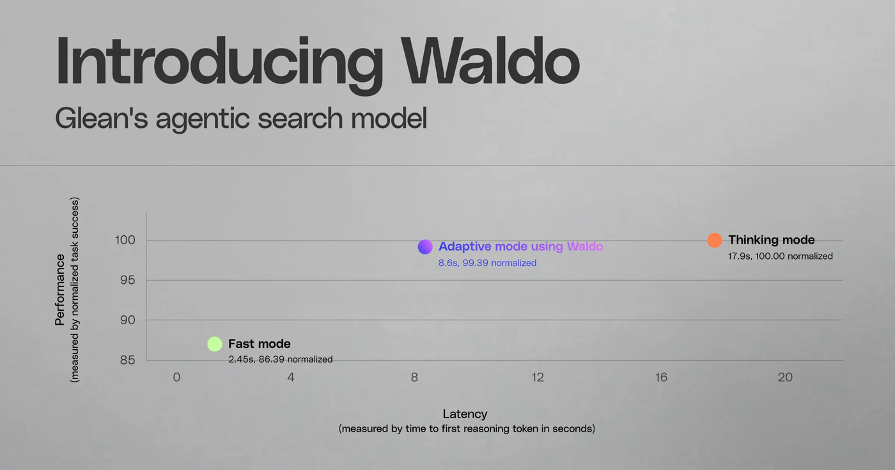
기존 LLM이 검색과 추론을 모두 처리하느라 응답 속도가 느린 문제를 해결하기 위해 Glean이 공개한 30B 모델 Waldo는 작고 빠른 sLLM이 데이터 검색을 담당하고 대형 모델이 추론만 수행하는 분업 구조를 도입했다. 이를 통해 응답 시간을 3초에서 250ms로 단축했으며 약 50% 낮은 레이턴시와 25% 감소된 토큰 사용으로 프로덕션 AI 에이전트의 효율성을 크게 개선했다.
핵심 포인트: 핵심 성과: 응답 시간 3초에서 250ms로 12배 단축, 약 50% 낮은 레이턴시와 25% 감소된 토큰 사용으로 실무 AI 에이전트 배포의 효율성 극대화
기타 (Others)
희소 벡터 기반 한국어 검색 최적화: 기존 임베딩보다 높은 리콜 달성
정보 검색 분야에서 키워드 검색에서 벡터 검색으로, 이제는 희소 벡터 기반 검색으로 진화하고 있는 상황에서 한국어 특화 모델 부족 문제가 발생하고 있다. 이 연구는 약 한 달간의 파인튜닝을 통해 희소 벡터 모델의 한국어 성능을 개선하여 기존 밀집 임베딩 방식보다 높은 리콜 성능을 달성했으며, 정보 검색 트랜드의 변천사와 함께 다양한 검색 기법 간의 성능 차이를 비교 분석한다.
핵심 포인트: 핵심 성과: 약 한 달간의 파인튜닝을 통해 희소 벡터 기반 한국어 검색 모델이 기존 밀집 임베딩 방식보다 높은 리콜 성능을 달성했으며, 한국어 특화 검색 최적화 기법을 입증했다.
기타 (Others)
DEVTOOLS & OPEN SOURCE
gc-tree: AI 코딩 에이전트를 위한 글로벌 컨텍스트 관리 도구
AI 코딩 에이전트 사용 시 세션이 바뀔 때마다 같은 배경 정보를 반복 설명해야 하는 문제를 해결하는 도구. 팀의 용어, 작업 방식, 저장소 간 연결 관계 등의 컨텍스트를 중앙에서 관리하여 세션 간 일관된 정보 전달을 가능하게 한다.
핵심 포인트: 핵심 기여: AI 에이전트가 세션 변경 시에도 프로젝트 컨텍스트를 유지하고 일관된 응답을 제공할 수 있도록 글로벌 컨텍스트 저장소를 제공한다.
🔗 share.google/RYduUSGRaq1erKVFL
기타 (Others)
OpenScreen — 월 29달러 유료 화면 녹화를 대체하는 무료 오픈소스
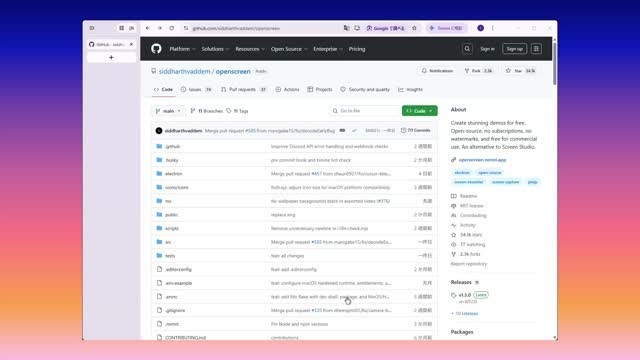
Screen Studio 같은 고가 화면 녹화 소프트웨어의 구독료 문제를 해결하기 위해 OpenScreen이 깃허브에 공개되었다. 윈도우와 맥을 모두 지원하며 워터마크 없이 상업적 이용이 가능하고, 자동 줌인, 모션 블러, 그림자 효과 등 고급 시각 효과를 녹화 영상에 자동으로 적용한다. 이는 기술 장벽이 무너지면서 오픈소스가 유료 SaaS 시장을 빠르게 대체하는 흐름을 보여준다.
핵심 포인트: 핵심 성과: 월 29달러의 구독료를 완전히 제거하면서도 자동 줌인, 모션 블러, 그림자와 둥근 모서리 같은 고급 시각 효과를 자동으로 제공한다. 크로스플랫폼(윈도우/맥) 지원과 상업적 이용 가능이라는 점에서 Screen Studio보다 제약이 적다.
🔗 github.com/siddharthvaddem/openscreen
GitHub
Lazyweb — AI 코드 생성을 위한 디자인 레퍼런스 도구
AI 모델이 생성하는 코드의 디자인 품질 저하 문제를 해결하기 위해 개발된 도구. Lazyweb은 Claude와 Codex 같은 AI 모델에 직접 연결되어 25만 개 이상의 실제 앱과 웹 화면 데이터를 디자인 레퍼런스로 제공한다. MCP 프로토콜을 통해 무료로 즉시 연동 가능하며 유료 구독이나 사용량 제한이 없다.
핵심 포인트: 핵심 기여: 250,000개 이상의 실제 앱/웹 UI 데이터셋을 AI 에이전트가 직접 참고할 수 있도록 MCP로 제공하여 생성 코드의 디자인 품질을 향상시킨다.
기타 (Others)
Claude Code Skill — Git 용어를 한국어로 번역한 협업 도구
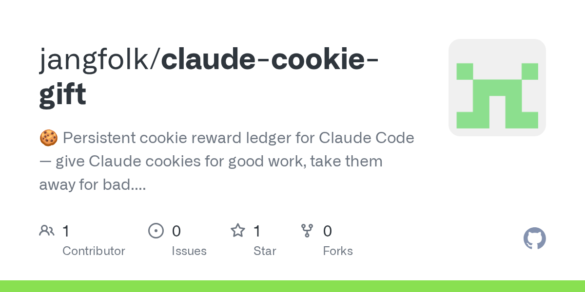
개발자와 비개발자 간 협업에서 Git 용어의 언어 장벽이 생산성을 저해하는 문제를 해결하는 스킬. 한국 개발자가 만든 이 도구는 commit, push, merge 같은 전문 용어를 ‘세이브’, ‘올리기’로 번역하고, 17개 에러 메시지를 한국어로 제공하며, 위험한 명령을 자동으로 차단한다. 기술 격차 해소를 학습이 아닌 도구 설계를 통해 달성하며, 팀의 가장 약한 사람을 기준으로 한 포용적 설계를 실현한다.
핵심 포인트: 핵심 기여: 전문 용어 번역과 자동 차단 기능으로 비개발자도 Git을 쉽게 사용 가능하게 하여 팀 협업 생산성 향상을 도모하고, 도구 설계가 학습보다 더 효과적인 기술 격차 해소 방법임을 실증한다.
🔗 github.com/jangfolk/claude-cookie-gift/
GitHub
Claude Code: AWS 서버리스 플러그인 출시

AWS 서버리스 애플리케이션 개발 시 Lambda, API Gateway, EventBridge 등 복잡한 서비스들의 패턴을 이해하고 구현하기 어려운 문제를 Claude Code용 AWS 서버리스 플러그인이 해결한다. SAM 또는 CDK 스캐폴딩, DynamoDB Streams, SQS, Kinesis 등 이벤트 소스 설정, 콜드 스타트 디버깅, 상태 지속성을 갖춘 함수 구축을 자동으로 지원하며 TypeScript 및 CDK를 기본값으로 활용한다.
핵심 포인트: 핵심 성과: Lambda, API Gateway, EventBridge, Step Functions 등 주요 AWS 서버리스 서비스를 지원하고, CDK/SAM 기반 스캐폴딩으로 개발 생산성을 향상시키며 콜드 스타트 최적화 및 관찰성(observability) 기능을 제공한다.
🔗 claude.com/plugins/aws-serverless
기타 (Others)
google-surf-mcp — API 키 없는 구글 검색 MCP 도구
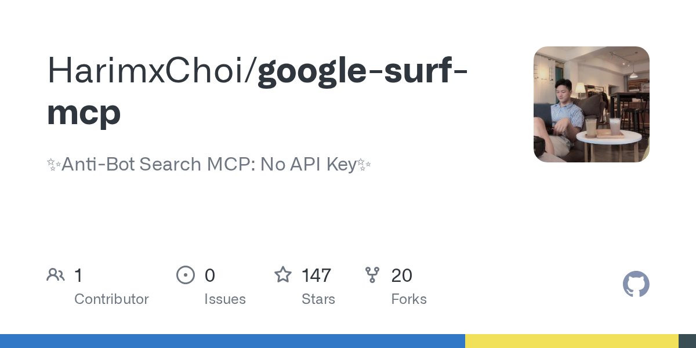
기존 구글 검색 MCP 도구 사용 시 API 키 발급의 번거로움과 비용 문제가 있었다. google-surf-mcp는 API 키 없이 Google 검색을 MCP 도구로 직접 활용할 수 있으며, 단순 검색을 넘어 검색 결과와 URL 본문 추출을 한 번에 처리한다. Node 18 이상과 Chrome/Chromium만 있으면 npx 명령으로 즉시 사용 가능하다.
핵심 포인트: 핵심 기여: 검색, 병렬 검색, URL 마크다운 추출, 검색과 본문 추출 통합 처리 등 4가지 주요 기능을 제공하며, API 키 없이 Anti-Bot 방식으로 구글 검색을 MCP 도구화했다.
🔗 github.com/HarimxChoi/google-surf-mcp
GitHub
Tolaria — 오프라인 마크다운 기반 LLM 위키 지식 관리 도구
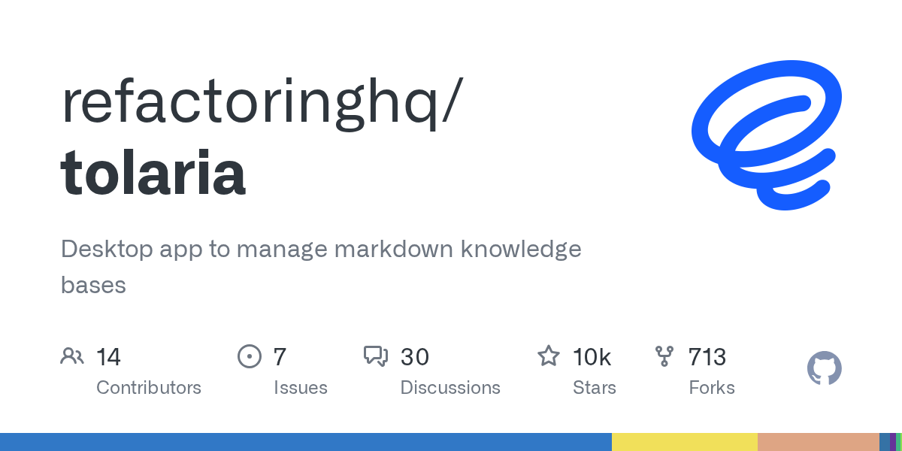
개인 지식 관리 과정에서 클라우드 종속성과 구독료라는 문제가 발생한다. Tolaria는 안드레이 카파시가 제안한 LLM 위키 개념을 구현한 Mac 전용 앱으로, 오프라인 환경에서 마크다운 파일로만 작동하며 Git 기반 버전 관리를 제공한다. 데이터 종속성이 없고 표준 마크다운 포맷을 사용해 모든 에디터에서 자유롭게 접근 가능하며, Claude와 Gemini 같은 AI 모델에 컨텍스트 제공이나 개인 세컨드 브레인 구축에 최적화되어 있다.
핵심 포인트: 핵심 기여: 클라우드 구독 없이 완전 오프라인 작동, Git 기반 자동 버전 관리, 개방형 마크다운 포맷으로 도구 종속성 제거, AI 컨텍스트 문서 관리 및 개인 지식베이스 구축에 특화
🔗 github.com/refactoringhq/tolaria
GitHub
Claude Code — 멀티 세션 동시 작업과 사이드 채팅으로 개발자를 오케스트레이터로
기존 Claude Code는 한 번에 하나의 작업만 순차 처리하는 제한이 있었다. 새로운 데스크톱 업데이트는 사이드바에서 여러 세션을 동시에 관리하고, 메인 작업 흐름을 방해하지 않는 사이드 채팅으로 곁가지 질문을 분리 처리한다. 상태, 프로젝트, 환경별 필터링과 자동 아카이빙으로 워크플로우를 단순화하며, 개발자의 사고 단위를 파일 중심에서 작업 중심으로 전환한다.
핵심 포인트: 핵심 기여: 멀티 세션 관리로 병렬 작업 처리 가능, 사이드 채팅으로 컨텍스트 분리, Verbose/Normal/Summary 3가지 뷰 모드로 정보 밀도 조절, CLI 플러그인이 팀 전체에 자동 배포되고 M-series 맥북에서 원격 GPU 워크스테이션 접근 표준화.
🔗 threads.com/@realailab_core/post/DX1eh0Wi…
기타 (Others)
CocoIndex — RAG 데이터 실시간 갱신 엔진
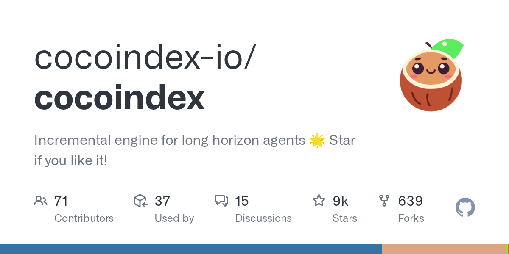
기존 RAG 시스템은 매일 밤 무거운 배치 작업으로 전체 데이터를 재처리해야 하는 비효율성을 안고 있다. CocoIndex는 Rust 기반 엔진 위에서 파이썬으로 동작하며, 임베딩 모델이나 청킹 방식 변경 시에도 영향받는 데이터만 선택적으로 재작업하여 실시간 에이전트 컨텍스트 업데이트를 구현한다. Slack, PDF, 코드베이스 등 다양한 소스를 연결하면 지연 없이 자동 최신화되며, 10분 내 프로덕션 레벨 에이전트 구축이 가능하다.
핵심 포인트: 핵심 기여: 증분 처리 방식으로 전체 데이터 재작업 제거, 임베딩 모델 변경 시에도 선택적 갱신 지원, 10분 내 프로덕션 에이전트 구축 가능.
🔗 github.com/cocoindex-io/cocoindex
GitHub
Quarkdown — 마크다운에 함수 기능을 더한 다중 출력 조판 언어

단일 마크다운 문서에서 여러 형식의 출력물을 동시에 생성해야 하는 문제를 해결하는 조판 언어. Quarkdown은 CommonMark와 GFM을 확장하여 점 표기법 함수 호출, 분기, 반복, 변수 선언, 사용자 정의 함수 등을 마크다운 파일 내에서 평가 가능하게 한다. 동일한 .qd 소스 하나로 일반 문서, 페이징된 논문, reveal.js 슬라이드, 문서 위키를 동시에 생성하여 LaTeX, Typst, MDX 대비 통합된 경험을 제공한다.
핵심 포인트: 핵심 기여: 마크다운의 가독성을 유지하면서 문서 전반을 코드 수준으로 제어하고, 위키·책·논문 출력이 한 도구에 통합되어 있으며 GitHub에서 1만 3천 개 이상의 별을 확보한 Kotlin 프로젝트
GitHub
Anthropic Claude API: 4개 개발 도구에 통합된 API 스킬

Claude API를 사용하다가 deprecated 메시지를 본 개발자들을 위해 Anthropic이 Claude API 스킬을 CodeRabbit, JetBrains Resolve AI, Warp 등 4개 도구에 추가했다. 이제 한 줄의 자연어 명령어로 캐시 히트율 개선, 모델 업그레이드 등의 작업을 수행할 수 있으며, 모델명 파라미터와 캐싱이 자동으로 적용된다.
핵심 포인트: 핵심 성과: Claude API 스킬이 주요 개발 도구 4곳에 통합되어 간단한 자연어 명령으로 API 최적화 작업을 자동화할 수 있으며, 캐싱 및 모델 파라미터가 자동 관리된다.
🔗 claude.com/blog/claude-api-skill
기타 (Others)
Onyx — 50개 사내 앱을 연결하는 오픈소스 AI 챗봇 플랫폼

기업에서 사내 AI 챗봇을 구축할 때 다양한 내부 시스템과의 연동 문제를 겪는다. Onyx는 Slack, Google Drive, GitHub 등 50여 개의 사내 앱을 한 번에 통합하는 오픈소스 플랫폼으로, Agentic RAG 기술을 통해 단순 검색을 넘어 자동으로 깊이 있는 조사를 수행한다. 로컬 또는 상용 LLM을 자유롭게 선택 가능하며, Docker로 내부망에 배포하여 데이터 유출 위험을 제거할 수 있다.
핵심 포인트: 핵심 기여: 50여 개 사내 앱 원클릭 통합, Agentic RAG 기반 자동 딥 리서치, Docker 기반 온프레미스 배포로 엔터프라이즈급 데이터 보안 제공
🔗 github.com/onyx-dot-app/onyx
GitHub
LangChain Harness Profiles: 모델별 자동 프롬프트 최적화

멀티 모델 환경에서 각 AI 모델(OpenAI, Claude, Gemini)에 동일한 프롬프트를 적용할 때 성능이 저하되는 문제를 해결한다. LangChain의 Harness Profiles는 각 모델의 특성에 맞춰 프롬프트와 도구를 자동으로 최적화하여 벤치마크 점수를 10~20점 향상시킨다. 기본 프로필만 적용해도 모델별 수동 튜닝에 소요되던 개발 시간을 크게 단축할 수 있다.
핵심 포인트: 핵심 성과: 기본 프로필 적용만으로 벤치마크 점수 10~20점 상승, 모델별 튜닝 시간 단축으로 멀티 모델 환경에서의 개발 생산성 향상.
🔗 langchain.com/blog/tuning-deep-agents-dif…
기타 (Others)
Claude Code — Anthropic API 전용 스킬로 개발 비용 80% 절감
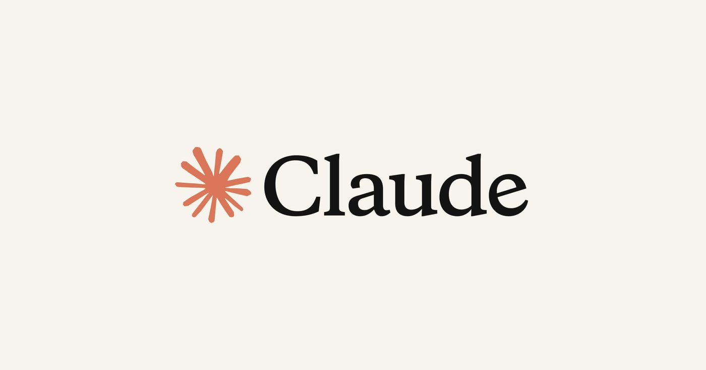
개발자들이 새로운 AI 모델로 마이그레이션할 때마다 설정 코드를 수동으로 수정해야 하는 번거로움이 있었다. Anthropic이 Claude Code에 기본 탑재한 Anthropic API 전용 스킬은 터미널 명령어 하나로 Opus 4.7 모델 마이그레이션, Prompt caching 설정, 관리형 에이전트 연동을 자동으로 처리한다. 실제 개발자들은 Prompt caching 설정으로 작업 비용을 40달러에서 8달러로 줄였으며, 사람이 놓치기 쉬운 캐시 오류도 자동으로 감지된다.
핵심 포인트: 핵심 성과: Prompt caching 설정 시 API 비용 80% 감소(40달러 → 8달러) 및 캐시 오류 자동 감지로 개발 생산성 향상
🔗 claude.com/blog/claude-api-skill
기타 (Others)
PRODUCT & INDUSTRY
PwC: AI를 활용한 계약 분석 자동화

법률, 규정 준수 및 조달 팀이 길고 구조화되지 않은 계약 문서 분석에 소비하는 시간이 많은 문제를 해결하기 위해 PwC에서 제시한 접근 방식. AI 기술을 활용하여 계약에 묻혀 있는 중요한 통찰력을 자동으로 추출하고 분석함으로써 수동 검토 시간을 단축하고 의사결정 효율성을 높인다.
핵심 포인트: 핵심 기여: 계약 분석 자동화를 통해 법률, 규정 준수, 조달 팀의 업무 시간을 대폭 절감하고 구조화되지 않은 계약 문서에서 핵심 정보 추출의 정확성을 향상시킨다.
🔗 aws.amazon.com/blogs/machine-learning/ext…
기타 (Others)
Code with Claude: Anthropic의 글로벌 개발자 컨퍼런스 유튜브 라이브 중계

Anthropic이 전통적인 기술 컨퍼런스의 한계를 벗어나 유튜브를 주요 미디어 채널로 활용하는 새로운 전략을 선보였다. 샌프란시스코, 런던, 도쿄 세 도시에서 동시에 개최되는 Code with Claude 행사를 모두 라이브 중계하며, 기능 발표, 외부 기업 사례, AI 네이티브 스타트업 인터뷰, 음악 라이브 등 52개의 다양한 영상 콘텐츠를 패키지로 제공한다. 개발자 커뮤니티를 넘어 대중을 대상으로 Claude 플랫폼의 에이전트 인프라와 코딩 기능을 소개하는 포괄적인 미디어 전략이다.
핵심 포인트: 핵심 전략: 작년 단일 도시 소규모 행사에서 올해 세 대륙 확대 개최, 23.5만 구독자 유튜브 채널을 통한 완전 무료 라이브 중계 및 녹화본 공개로 개발자 접근성 극대화.
기타 (Others)
Sun Finance: Amazon Bedrock으로 AI 기반 ID 확인 파이프라인 구축

신원 확인 프로세스에서 문서 추출의 낮은 정확도와 높은 비용이 문제인 상황에서 Sun Finance는 Amazon Bedrock, Textract, Rekognition을 활용한 AI 기반 IDV 솔루션을 개발했다. 이 솔루션은 추출 정확도를 79.7%에서 90.8%로 향상시키고 문서당 처리 비용을 91% 절감하며 전체 처리 시간을 단축함으로써 대규모 금융 서비스의 효율성 문제를 해결한다.
핵심 포인트: 핵심 성과: 추출 정확도 11.1%p 증가(79.7% → 90.8%), 문서당 비용 91% 절감, 처리 시간 단축으로 확장 가능한 ID 확인 파이프라인 구현
🔗 aws.amazon.com/blogs/machine-learning/sun…
기타 (Others)
Claude Managed Agents — AI 에이전트의 자가학습과 원클릭 배포 시대 개막
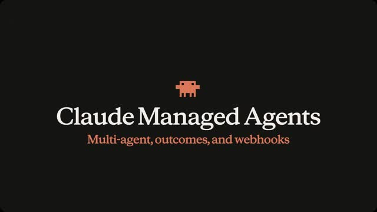
기업들이 AI 에이전트를 프로덕션 환경에 배포할 때 수개월의 인프라 작업이 필요한 문제를 해결하기 위해 앤트로픽이 Claude Managed Agents를 공개했다. 드리밍 기능으로 에이전트가 백그라운드에서 과거 작업을 분석하며 스스로 패턴을 수정하고 성능을 개선하는 자가학습 시스템을 제공하며, 작업과 도구, 가드레일만 설정하면 며칠 내 배포가 가능해졌다. Notion, Asana, Rakuten 등 주요 기업들이 이미 실무 에이전트를 구축했으며, 기업들은 서버 세팅 대신 사용자 경험에만 집중할 수 있게 되었다.
핵심 포인트: 핵심 성과: 에이전트 배포 시간을 수개월에서 며칠로 단축했으며, 드리밍 기능으로 AI가 인간 개입 없이 자동으로 성능을 향상시키는 역량의 복리 구조를 구현했다.
기타 (Others)
Claude — 키리스 인증으로 API 키 관리 부담 제거
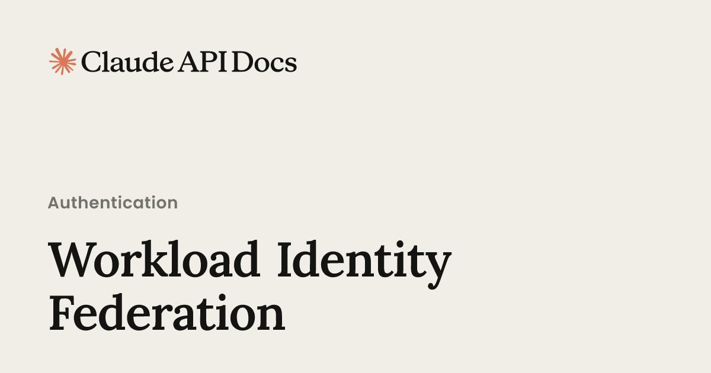
개발팀이 실수로 API 키를 노출하면서 보안 관리에 어려움을 겪는 문제를 해결하기 위해 앤트로픽이 Claude 플랫폼에 키리스 인증 기능을 도입했다. AWS, GCP, Azure 등 기존 클라우드 IAM이나 OIDC 토큰을 활용해 API 키 발급과 관리 없이 Claude에 직접 접근할 수 있으며, 주기적인 키 교체 및 관리 작업으로 인한 기업의 인프라 부담을 대폭 경감한다.
핵심 포인트: 핵심 성과: API 키 없이 AWS, GCP, Azure의 기존 클라우드 권한(IAM) 및 OIDC 토큰만으로 Claude 플랫폼 접근 가능하며, 주기적 키 교체 및 관리 작업 완전 제거
🔗 platform.claude.com/docs/en/build-with-cl…
기타 (Others)
Refero Styles — AI 에이전트를 위한 2,000개 디자인 시스템 컬렉션
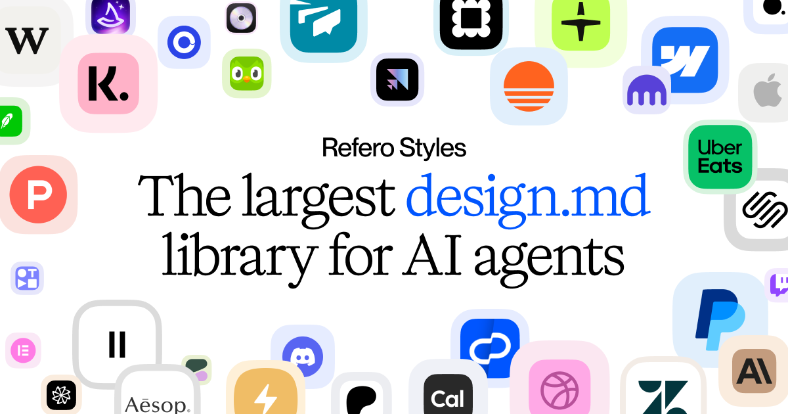
디자인 시스템을 구축할 때 세계 최고의 제품들의 디자인 원칙을 참고하기 어려운 문제를 해결한다. Refero Styles는 전 세계 2,000개 제품의 DESIGN.md 파일을 수집해 색상, 타이포그래피, 간격, 레이아웃 등 핵심 디자인 요소를 체계적으로 정리했다. AI 에이전트에게 직접 전달 가능한 형식으로 구성되어 있으며, 사용자는 이를 참고해 자신만의 디자인 가이드를 작성할 수 있다.
핵심 포인트: 핵심 기여: 세계 최고 수준의 2,000개 제품 디자인 데이터를 AI 에이전트가 직접 활용 가능한 구조화된 마크다운 포맷으로 제공하여 디자인 시스템 구축의 진입장벽을 낮춤
기타 (Others)